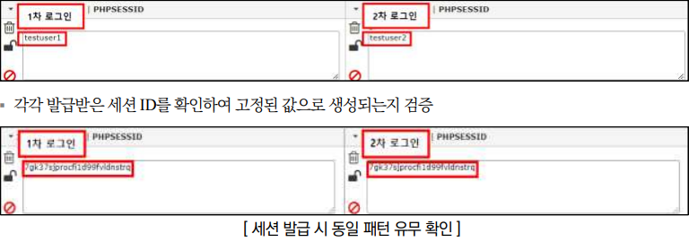
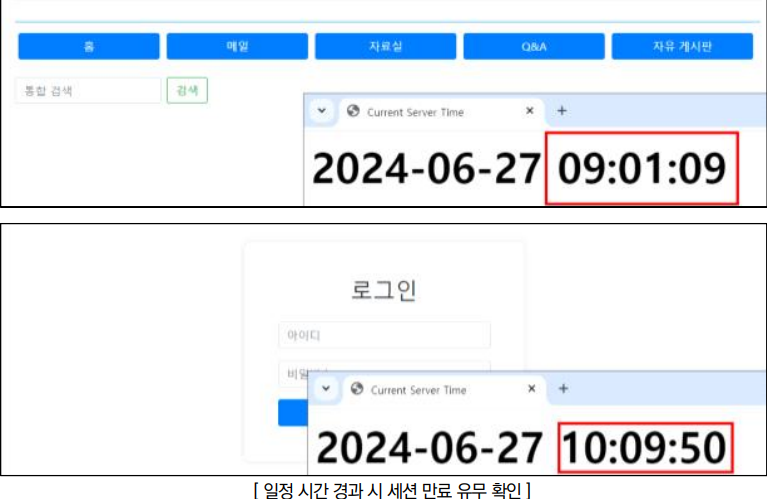
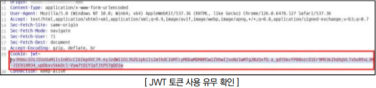
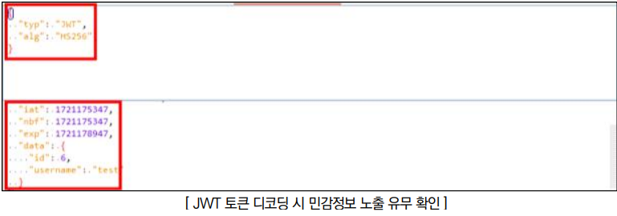
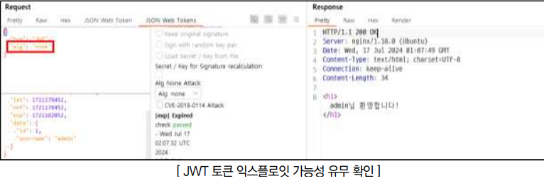

점검 목적
- 사용자의 세션 ID를 적절히 관리하여 공격자가 불법적으로 접근하거나 비인가적인 세션 탈취를 차단하기 위함
참고
※ 세션(Session): 일정 시간 동안 같은 사용자(브라우저)로 부터 들어오는 일련의 요구를 하나의 상태로 보고 그 상태를 일정하게 유지시키는 기술
※ JSON Web Token (JWT): 헤더, 페이로드, 서명으로 구성되는 JSON 객체 형식이며, 사용자 정보가 클라이언트에 저장되고 서버에 요청 시마다 전송하여 인증 상태를 유지시키는 기술
판단 기준
양호 : 추측 불가능한 세션 ID가 발급되고, 세션 종료 시간이 설정되어 있는 경우
취약 : 세션 ID가 일정한 패턴으로 발급되거나 세션 종료 시간이 설정되지 않아 세션 재사용이 가능한 경우
조치 방법
- 추측 불가능한 세션 ID가 발급되도록 로직을 구현하고, 세션 종료 시간 설정 또는 자동 로그아웃 기능을 구현하여 사이트 특성에 맞게 적정 시간을 설정
점검 방법
Step 1) 로그인 과정에서 발급받은 세션 ID를 확인하고 로그아웃 후 재 로그인 시 각각 발급받은 세션 ID에 대해 일정한 패턴이 존재하는지 검증
* 각각 발급받은 세션 ID를 확인하여 예측 가능한 패턴으로 생성되는지 검증

Step 2) 로그인 후 웹 페이지 사용을 중지한 상태로 일정 시간이 경과하였을 때 세션이 유지되는지 확인

JWT(JSON Web Token
Step 1) 사용자 인증 및 상태 유지를 위해 JWT(JSON Web Token)가 사용되는지 확인 (JWT는 일반적으로 Authorization 헤더에 포함되고, 경우에 따라 Cookie 헤더에 포함, 또는 POST 데이터로 전송할 수 있음)

Step 2) JWT(JSON Web Token)의 헤더와 페이로드 부분을 각각 Base64 디코딩하여 내용을 확인할 수 있으며, 안전한 알고리즘을 사용하는지, 토큰 만료 설정이 적절하게 되었는지, 민감정보가 노출되는지 등을 확인

Step 3) 페이로드 변조 후 서명을 삭제하거나 None 알고리즘으로 변조하였을 때 토큰이 유효하여 타 계정의 권한 탈취가 가능한지 확인

조치 방법
1. 공격자가 하나의 유효한 세션 ID를 추측하는 것이 불가능에 가깝도록 길고 복잡한 세션 ID를 생성하여야 하며, 새 로그인 시 기존 세션 ID를 폐기하고 새로운 세션 ID로 발급해야 하며, 이용 중인 계정에 대해 접속 IP와 디바이스 정보를 통해 동시 세션 로그인 여부를 검사해야함